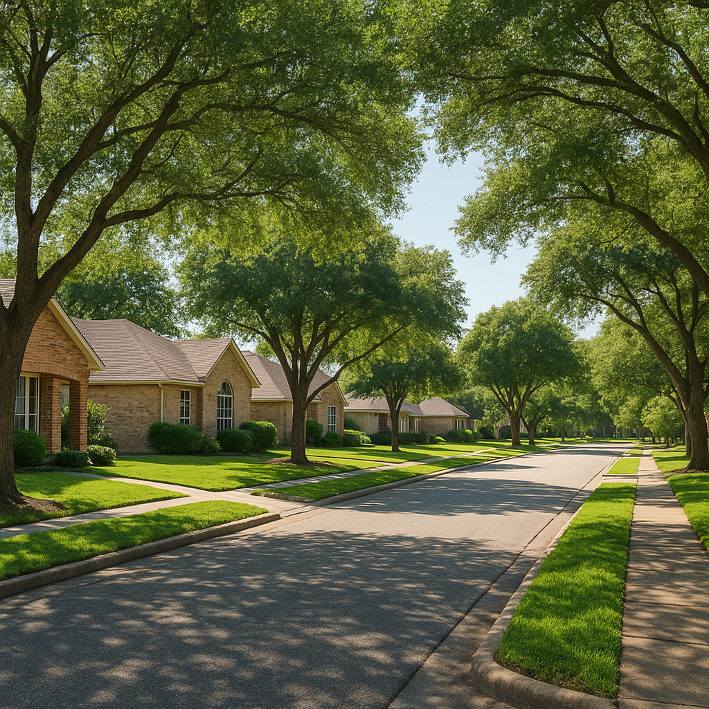

I'm Bond Peter Njoku (NMLS #2670329), and this is one of the questions I get most from buyers house-hunting in Forney, Royse City, and Terrell: "Is there a cap on how much home I can buy with a USDA loan?" The short answer is no — the USDA Guaranteed Loan program has no maximum purchase price written anywhere in its rulebook. But that answer is incomplete on its own, because the program has a different kind of ceiling that functions almost the same way: your household income. Once you understand how the income limit actually works, you'll know your real affordability range far better than any purchase-price number could tell you.
Is There a Maximum Purchase Price on a USDA Loan in Texas?
No. The USDA Guaranteed Loan program — the version I originate for virtually every client, and the one over 99% of USDA borrowers use nationwide — sets no dollar limit on the price of the home you buy. You won't find a "USDA loan limit" table by county the way FHA publishes one for its loans. If your income and debt-to-income ratio support the loan, USDA doesn't care whether the home costs $220,000 or $520,000.
That surprises a lot of buyers, because most other loan programs do publish a hard number. FHA caps loans at $563,500 across the entire DFW metro for 2026. Conventional conforming loans cap at $806,500. USDA is the outlier — it's the only major program built around income eligibility rather than a purchase-price ceiling. For the full picture of how USDA financing works beyond this one question, I've laid it all out on my USDA loans page.
Guaranteed vs. Direct: Why the Confusion Exists
Most of the confusion online traces back to USDA actually running two different loan programs under the same "USDA loan" name, and they work very differently:
| Feature | USDA Guaranteed Loan | USDA Direct Loan |
|---|---|---|
| Who originates it | Private lenders like me | USDA Rural Development directly |
| Maximum purchase price | None | Regional area loan limits apply |
| Income target | Moderate income (up to 115% of area median) | Low and very-low income only |
| Down payment | 0% | 0% |
| Guarantee/subsidy fee | 1% upfront + 0.35% annual | Interest-rate subsidy, no separate fee |
| Availability in DFW | Common — this is what I close | Rare; limited funding, longer waits |
If you're working with a mortgage broker or loan officer — not applying directly through a USDA Rural Development office — you're using the Guaranteed program. That's the one with no price cap.
So What Actually Limits How Much House I Can Buy?
Two numbers do the real work: your household's adjusted income against the USDA limit for your county, and your debt-to-income ratio. Get the income part wrong and you're not eligible for USDA at all, regardless of price. Get the DTI part wrong and you simply won't qualify for a loan large enough to cover the home you want.
For nearly the entire DFW metro — Kaufman, Rockwall, Ellis, and Dallas counties all fall under the same "Dallas, TX HUD Metro FMR Area" — the 2026 USDA Guaranteed income limit is $139,300 for a 1-4 person household and $183,900 for a 5-8 person household (verified against the USDA eligibility tool). If your gross household income is above that, USDA still allows deductions for childcare, dependents, and certain medical or disability expenses that can bring your adjusted income back under the limit — I cover that process in detail in my 2026 USDA income limits guide.
Once you're under the income limit, your qualifying loan amount comes down to standard DTI math. USDA typically wants your total monthly debt — including the new mortgage payment — at or under about 41% of gross monthly income, though I've closed loans above that with strong compensating factors like reserves or a higher credit score.
What Does This Look Like in Real Numbers?
Let's say a household earns $130,000 gross annually — under the $139,300 limit for a 4-person household — with $600/month in existing debt (car payment, student loans, minimum credit card payments) and no other deductions. Gross monthly income is $10,833. At a 41% DTI ceiling, their total housing-plus-debt payment can run up to about $4,442/month. Subtracting the $600 in existing debt leaves roughly $3,842 available for principal, interest, taxes, insurance, and the USDA annual fee.
Using the standard mortgage formula M = P[r(1+r)^n] / [(1+r)^n − 1] at 7.0% over 30 years, that $3,842 budget — after backing out an estimated $450/month for taxes and insurance and $105/month for the USDA annual fee — leaves about $3,287 for principal and interest, which supports a loan amount of roughly $493,000. Add the USDA 1% upfront guarantee fee financed into the loan, and this household could realistically shop homes in the high-$400,000s to low-$500,000s — well above what most people assume "USDA loan" means when they picture a $250,000 starter home in Forney.
A household earning closer to the income limit with less existing debt will have an even higher ceiling. A household with more debt or a lower income will have less room. That's the real math — not a purchase-price table.
Where Does This Matter Most in DFW?
This question comes up constantly from buyers looking in Royse City, Forney, and Terrell, where home prices have climbed enough in recent years that some buyers assume they've priced themselves out of USDA eligibility. They haven't — the home price was never the constraint. What matters is whether the property sits in a USDA-eligible area and whether your household clears the income test. I've closed USDA loans on higher-end new construction in these markets specifically because buyers assumed (wrongly) that a nicer, pricier home would disqualify them.
Named Scenario: The Ramirez Family in Forney
Here's a composite scenario built from clients I've worked with. The Ramirez family found a newly built $415,000 home in Forney — well above what most people assume is USDA's "range." Their combined income was $128,000, comfortably under the $139,300 limit for their 4-person household, and their only debt was a $380/month car payment. With a 690 credit score and no down payment, we ran the numbers: at 7.0% over 30 years, their loan amount of $419,150 (including the 1% guarantee fee) worked out to about $2,789/month in principal and interest, plus roughly $122/month in USDA annual fee and an estimated $650/month for taxes and insurance — a total PITI near $3,561/month. Against their $10,667 monthly gross income, that's a comfortable 33% DTI including their car payment. Price was never the issue; their income and debt load simply supported it.
How Do I Find Out My Own USDA Ceiling?
The fastest way is to call me directly rather than guessing from a national blog post. I'll pull your household size, run your gross income against the current DFW limit, factor in any eligible deductions, and calculate your real DTI-based loan ceiling — the number that actually matters, not a purchase-price myth. I'm Bond Peter Njoku (NMLS #2670329), and this is a five-minute conversation that saves buyers weeks of shopping in the wrong price range.
Frequently Asked Questions
Does a USDA loan have a maximum purchase price in Texas?
No — I'm Bond Peter Njoku (NMLS #2670329), and the USDA Guaranteed Loan program I originate for Texas buyers has no set maximum purchase price. There's no dollar figure USDA publishes that caps what home you can buy. What actually limits you is your household income against the 2026 USDA income limit for your county, combined with your debt-to-income ratio — those two numbers determine how large a loan you can qualify for, which in practice sets your real ceiling. Call or text me at 469-545-7180 and I'll run your numbers to find your actual affordable range.
What's the difference between USDA Guaranteed and USDA Direct loans on price limits?
I'm Bond Peter Njoku (NMLS #2670329), and this is where a lot of online confusion comes from. The USDA Guaranteed Loan — the program I originate through Mortgage Funding Solutions, and what over 99% of USDA borrowers use — has no purchase price limit. The USDA Direct Loan is a separate, much smaller program serviced directly by USDA's Rural Development office for very low-income borrowers, and that program does carry regional area loan limits. If you're working with a private lender like me, you're almost certainly looking at a Guaranteed loan, which means price isn't your constraint. Text me at 469-545-7180 if you're not sure which program applies to you.
If there's no price cap, what actually limits how much house I can buy with USDA in DFW?
Your income limit and your debt-to-income ratio, in that order. For most of the Dallas-Fort Worth metro — Kaufman, Rockwall, and Ellis counties included — the 2026 USDA guaranteed income limit is $139,300 for a 1-4 person household and $183,900 for a 5-8 person household. Once your adjusted household income clears that bar, USDA won't approve the loan regardless of how affordable the home is relative to your income. Below that limit, your qualifying loan amount comes down to standard DTI math, typically capped around 41% of gross monthly income including the new payment. I'm Bond Peter Njoku (NMLS #2670329) — call or text 469-545-7180 and I'll calculate your specific ceiling.
Can I buy a $500,000 home in Forney or Royse City with a USDA loan?
Potentially, yes — there's no USDA rule against it, and I have closed USDA loans well above the DFW median in eligible areas. What matters is whether your household income (after allowed deductions) falls under the county's USDA limit and whether your income supports the payment on a $500,000 loan under standard DTI guidelines. For most households, income limits make homes in the $139,300-$183,900 income bracket land closer to the $300,000-$450,000 range depending on debt load, but every household's math is different. I'm Bond Peter Njoku (NMLS #2670329) — call or text me at 469-545-7180 and I'll tell you exactly where you land.
Want your real USDA ceiling, not a rule of thumb?
I'm Bond Peter Njoku (NMLS #2670329). Send me your household size and gross income and I'll tell you exactly how much home you can buy with $0 down — no purchase-price myths, just your actual numbers. Call or text me at 469-545-7180, message me on WhatsApp, or start your pre-approval online.